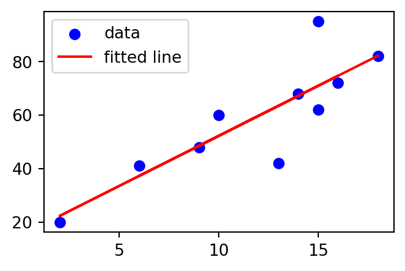
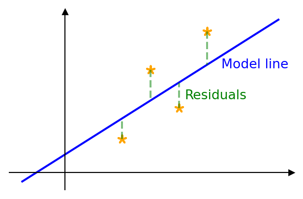
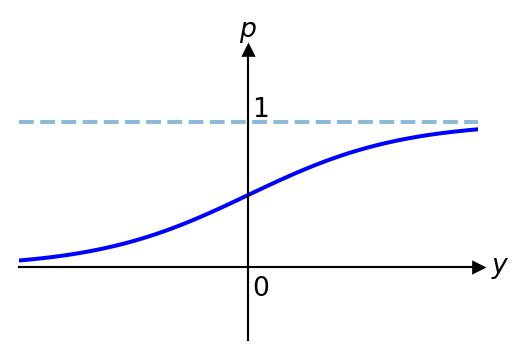
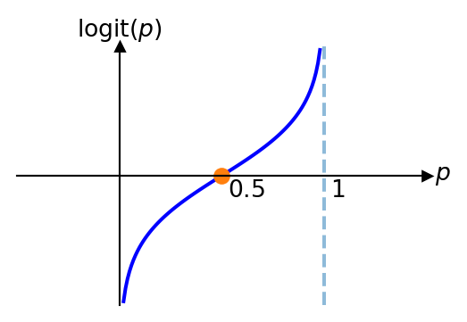

Topic 4 — Linear Regression, Correlation, and Logistic Regression
\[ \renewcommand{\P}{\mathbb{P}} \renewcommand{\E}{\mathbb{E}} \newcommand{\R}{\mathbb{R}} \newcommand{\var}{\mathrm{Var}} \newcommand{\cov}{\mathrm{cov}} \newcommand{\corr}{\mathrm{corr}} \newcommand{\dx}{\,\mathrm{d}x} \newcommand{\dy}{\,\mathrm{d}y} \newcommand{\eps}{\varepsilon} \]
Linear Regression: Motivation
A linear regression fits a straight line to observed data to demonstrate a linear relationship between the variables, and it makes predictions on new data.
Exam marks vs. revision hours: this can be represented by a scatter plot, with a fitted line drawn through the data.
The Method of Least Squares

Assuming data pairs \((x_1,y_1),\ldots,(x_n,y_n)\), the model line takes the form \(\E(y)=\beta_0+\beta_1x\), where \(y\) is the dependent (response) variable and \(x\) is the independent (explanatory/predictor) variable. The variables are related by \[ y=\beta_0+\beta_1x+\epsilon, \]
where \(\epsilon\) is the error. We look for the line minimising the sum of squared residuals \[ f(\beta_0,\beta_1) = \sum_{i=1}^{n}(\beta_0+\beta_1x_i-y_i)^2. \]
Least Squares Estimates
\[ \hat{\beta}_1=\dfrac{\sum_{i=1}^nx_iy_i-n\bar{x}\bar{y}}{\sum_{i=1}^nx_i^2-n\bar{x}^2}=\dfrac{\sum_{i=1}^n(x_i-\bar{x})(y_i-\bar{y})}{\sum_{i=1}^n(x_i-\bar{x})^2}=\dfrac{S_{xy}}{S_{xx}}; \] and \[ \hat{\beta}_0=\bar{y}-\hat{\beta}_1\bar{x}. \]
Note that \[ S_{yy}=\sum_{i=1}^n(y_i-\bar{y})^2=\sum_{i=1}^ny_i^2-n\bar{y}^2. \]
The least squares model is therefore \[ \hat{y}=\hat{\beta}_0+\hat{\beta}_1x. \]
Correlation
The strength of a linear relationship between the variables can be measured by the Pearson correlation coefficient: \[ r=\dfrac{S_{xy}}{\sqrt{S_{xx}S_{yy}}}. \]
\(r\) can take values between \(-1\) and \(1\), where \(-1\) and \(1\) represent a perfect linear relationship, and \(r=0\) means no linear relationship. A positive \(r\) denotes a positive correlation, a negative \(r\) a negative correlation. As a rule of thumb: \[ \begin{aligned} |r|>0.7 & \quad \text{Strong correlation}\\ 0.7\geq |r|>0.4& \quad \text{Moderate correlation}\\ |r|\leq 0.4 & \quad \text{Weak correlation} \end{aligned} \]
Example: Revision Hours vs. Exam Marks
\(\bar{x}=11.8\), \(\bar{y}=59\).
| Revision Hours \((x_i)\) | 18 | 2 | 13 | 14 | 6 | 15 | 16 | 9 | 10 | 15 | Sum |
|---|---|---|---|---|---|---|---|---|---|---|---|
| Mark \((y_i)\) | 82 | 20 | 42 | 68 | 41 | 95 | 72 | 48 | 60 | 62 | |
| \(x_i-\bar{x}\) | 6.2 | -9.8 | 1.2 | 2.2 | -5.8 | 3.2 | 4.2 | -2.8 | -1.8 | 3.2 | 0 |
| \(y_i-\bar{y}\) | 23 | -39 | -17 | 9 | -18 | 36 | 13 | -11 | 1 | 3 | 0 |
| \((x_i-\bar{x})(y_i-\bar{y})\) | 142.6 | 382.2 | -20.4 | 19.8 | 104.4 | 115.2 | 54.6 | 30.8 | -1.8 | 9.6 | 837 |
| \((x_i-\bar{x})^2\) | 38.44 | 96.04 | 1.44 | 4.84 | 33.64 | 10.24 | 17.64 | 7.84 | 3.24 | 10.24 | 223.6 |
| \((y_i-\bar{y})^2\) | 529 | 1521 | 289 | 81 | 324 | 1296 | 169 | 121 | 1 | 9 | 4340 |
\[ \hat{\beta}_1=\frac{837}{223.6}=3.743, \qquad \hat{\beta}_0=59-3.743\times11.8=14.829. \] Regression line: \(\hat{y}=3.743x+14.829\).
\[ r=\frac{837}{\sqrt{223.6}\sqrt{4340}}=0.85, \] indicating a strong positive correlation. \(r^2=0.723\): \(72.3\%\) of the variance of the marks is explained by revision. The regression model fits the data well.
For \(11\) hours of revision: \[ \hat{y}=3.743\times11+14.829\approx56. \] Common sense should be used when predicting: we cannot predict outside the possible range of \(x\) values (e.g. \(-5\) hours of revision makes no sense).
Multiple Linear Regression
This extends the simple linear regression model \(y=\beta_0+\beta_1x+\epsilon\) to several independent variables \(x_1,\ldots,x_n\) and a single dependent variable \(y\): \[ y=\beta_0+\beta_1x_1+\beta_2x_2+\cdots+\beta_nx_n+\epsilon. \]
We concentrate on \(n=2\) independent variables: \[ y=\beta_0+\beta_1x_1+\beta_2x_2+\epsilon. \] Example. \(x_1\) — hours of revision, \(x_2\) — number of attended lectures, \(y\) — mark.
Coding the variables: \[ v_i=y_i-\bar{y}, \qquad u_{1i}=x_{1i}-\bar{x}_1, \qquad u_{2i}=x_{2i}-\bar{x}_2, \]
we write the model as \(v=\beta_0'+\beta_1u_1+\beta_2u_2+e\), and minimise \[ Q=\sum_{i=1}^n(v_i-\beta_0'-\beta_1u_{1i}-\beta_2u_{2i})^2. \]
This leads to the normal equations. Using \[ S_{pq}=\sum_{i=1}^n(x_{pi}-\bar{x}_p)(x_{qi}-\bar{x}_q), \qquad S_{0p}=\sum_{i=1}^n(x_{pi}-\bar{x}_p)(y_i-\bar{y}), \qquad p,q=1,2, \]
they become \[ \hat{\beta}_1S_{11}+\hat{\beta}_2S_{12}=S_{01}, \qquad \hat{\beta}_1S_{12}+\hat{\beta}_2S_{22}=S_{02}. \]
With \(D=S_{11}S_{22}-S^2_{12}\), \[ \hat{\beta}_1=\frac{S_{22}S_{01}-S_{12}S_{02}}{D}, \qquad \hat{\beta}_2=\frac{S_{11}S_{02}-S_{12}S_{01}}{D}, \qquad \hat{\beta}_0=\bar{y}-\hat\beta_1\bar{x}_1-\hat\beta_2\bar{x}_2, \] giving the model \(\hat{y}=\hat{\beta}_0+\hat{\beta}_1x_1+\hat{\beta}_2x_2\).
Logistic Regression: Motivation
The main use of logistic regression is to predict a binary outcome from a linear combination of independent variables — e.g. predicting whether a student passes an exam from hours of revision. Here the data is binary, taking only values \(0\) and \(1\) (formally, the dependent variable \(Y\sim Bin(1,p)\)), and we want to predict \(p\).
Example: Pass/Fail vs. Revision Hours
A student spent various numbers of hours revising, and we record whether they passed (1) or failed (0):
| Hours | 10 | 11 | 12 | 13 | 14 | 17 | 18 | 19 | 20 |
|---|---|---|---|---|---|---|---|---|---|
| P/F | 0 | 0 | 0 | 1 | 0 | 1 | 1 | 0 | 1 |
A scatter plot of this data (points at \(y=0\) or \(y=1\) for each hour value) is naturally fitted with an S-shaped (sigmoid) curve rising from near \(0\) for low hours to near \(1\) for high hours.
The Logistic (Sigmoid) Model
The logistic regression model chooses a fitting curve of the form \[ f(x) = \frac{1}{1+e^{-(\beta_0+\beta_1x)}}, \qquad \big(1+e^{-(\beta_0+\beta_1x)}\big) > 0, \] where \(\beta_0,\beta_1\) are fitting parameters estimated from the data. Writing \(y=\beta_0+\beta_1x\) and \(g(y)=\dfrac{1}{1+e^{-y}}=\dfrac{e^y}{1+e^y}\), we have \(f(x)=g(\beta_0+\beta_1x)\).
Always \(0<f(x)<1\). If \(\beta_1>0\), then \(\displaystyle\lim_{x\to+\infty}f(x)=1\) and \(\displaystyle\lim_{x\to-\infty}f(x)=0\). Indeed, \[ \frac{1}{1+e^{-\beta_1x-\beta_0}} = \frac{1}{1+\dfrac{e^{-\beta_0}}{e^{\beta_1x}}} \to \frac{1}{1+0} = 1 \qquad (x\to+\infty,\ \beta_1>0), \]
\[ \frac{1}{1+e^{-\beta_1x}e^{-\beta_0}} \to 0 \qquad (x\to-\infty). \] Also, \(f(x)\) is increasing.

Deriving the Logit Function
We use this curve for prediction: \(g(y)=p\in[0,1]\) is the probability (e.g. of passing). Solving for \(y\): \[ g(y) = \frac{e^y}{1+e^y} = p \ \Longrightarrow\ e^y = p + pe^y \ \Longrightarrow\ e^y(1-p) = p \ \Longrightarrow\ e^y = \frac{p}{1-p} \ \Longrightarrow\ y = \ln\frac{p}{1-p}. \]
The quantity \(\dfrac{p}{1-p}\) is called the odds.
The natural logarithm of the odds is called the logit function: \[ \mathrm{logit}(p) = \ln\frac{p}{1-p}, \qquad 0<p<1. \]

So \(g(y)=p\) means \(y=\mathrm{logit}(p)\): the logit is the inverse function of the logistic function \(g(y)=\dfrac{1}{1+e^{-y}}=\dfrac{e^y}{1+e^y}\).
Several Predictor Variables
If the data depends on several predictor variables \(x_1,x_2,\ldots,x_n\) (e.g. \(x_1\) = hours of revision, \(x_2\) = cups of coffee, …), we still consider \[ f(x_1,\ldots,x_n) = \frac{1}{1+e^{-(\beta_0+\beta_1x_1+\beta_2x_2+\cdots+\beta_nx_n)}}, \]
with \(y=\beta_0+\beta_1x_1+\cdots+\beta_nx_n\), so that \(f(x_1,\ldots,x_n)=g(y)=p\in(0,1)\), and \[ \hat\beta_0 + \hat\beta_1x_1 + \cdots + \hat\beta_nx_n = y = \mathrm{logit}(p), \] where \(\hat{\ }\) denotes estimated parameters.